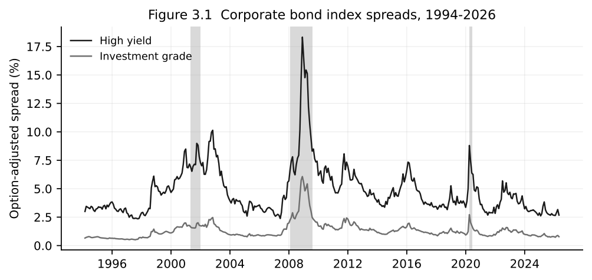
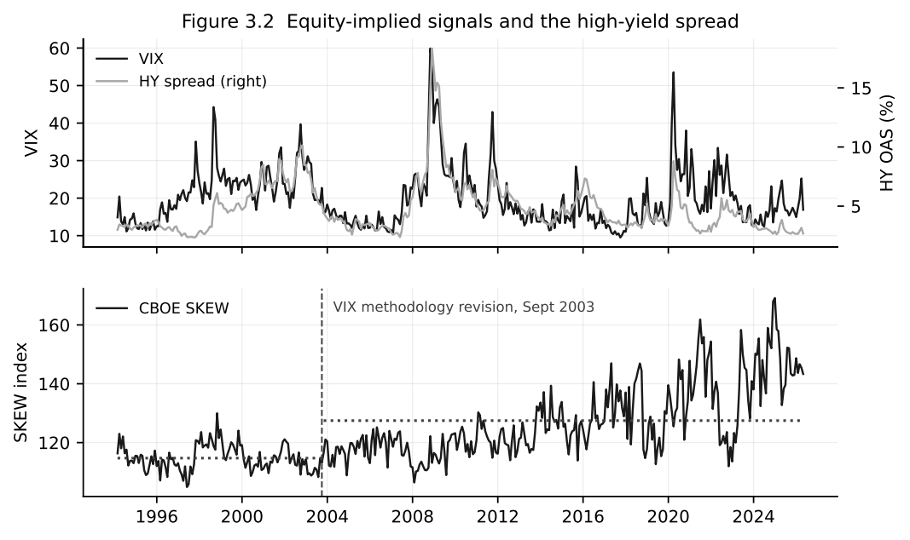

Credit investors rarely look only at credit.
A widening corporate-bond spread may confirm that markets have become more concerned about default risk, liquidity or the economic outlook. But by the time that shift is clearly visible in credit spreads, it may already have appeared elsewhere—in equities, options, rates or currencies.
I became interested in this while working in sovereign reserve management through the pandemic recovery, the inflation shock and the sharp tightening cycle that followed. Those years were a reminder that stress does not remain neatly inside one asset class. It moves between markets, though not always at the same speed or in the same way.
That observation became the starting point for my master’s thesis at Frankfurt School: could information from equity and option markets improve tactical allocation between high-yield and investment-grade corporate bonds?
The logic was appealing. High-yield bonds are more exposed to economic weakness and shifts in risk appetite, while investment-grade bonds are generally more defensive from a credit perspective. If equity-derived indicators provided an earlier warning of deteriorating conditions, an investor might reduce high-yield exposure before the credit market had fully adjusted—and add it back as conditions improved.
But a plausible market story is not necessarily a useful investment signal.
Two markets watching the same firms
Equity and corporate debt occupy different places in a company’s capital structure, but both respond to changes in the health of the same underlying business.
When a company’s prospects deteriorate, its equity may fall, option-implied risk may rise and its credit spreads may widen. The effects are not identical, but they often stem from the same underlying change in expectations.
That relationship is particularly important in high yield. Lower-rated companies have less room for error, so their bonds tend to respond more sharply to weaker growth, tighter financial conditions and declining risk appetite. Investment-grade bonds are not immune, but their returns usually reflect a different balance between interest-rate and credit risk.
The choice between high yield and investment grade is therefore not simply a search for whichever market offers the higher return. It is also a decision about how much credit risk an investor wants to carry at a particular point in the cycle.

The long history of spreads makes the distinction clear. During the dot-com decline, the global financial crisis, the pandemic shock and later periods of tightening, high-yield spreads moved far more dramatically. A tactical allocation process would be valuable if it could identify when the compensation for taking that additional credit risk was becoming more or less attractive.
Why look to equity options?
Credit spreads already reflect the market’s assessment of default, liquidity and broader economic risk. Equity options offer another perspective on the same environment and one that can adjust quickly as investors reassess the distribution of future outcomes.
I focused on three measures.
The VIX summarises the volatility implied by S&P 500 options. It is often described as a fear gauge, although it is more accurately understood as the market price of expected near-term volatility.
CBOE SKEW captures the relative pricing of unusually severe downside outcomes. It can rise even when conventional measures of volatility remain relatively calm, making it potentially useful as a measure of tail-risk concern.
The variance risk premium compares option-implied variance with subsequently realised variance. The gap partly reflects how much investors are willing to pay for protection against volatility risk.
The three measures are related, but they capture different aspects of market pricing: expected turbulence, downside asymmetry and the price of protection.
The visual relationship with credit can be striking. Large increases in the VIX, for example, often coincide with wider high-yield spreads. That does not establish predictability—the two series can simply be reacting to the same shock—but it is enough to motivate a more demanding test.

The chart also illustrates the central difficulty. Two markets reacting to the same shock is very different from one market providing information early enough to forecast the other.
The timing problem
The important word in the research question was not information. It was incremental.
Equity markets may process some news before credit markets, particularly for individual companies and over short horizons. My thesis, however, examined broad high-yield and investment-grade indices at a monthly frequency. Any lead visible over hours or days may have disappeared by the time a monthly allocation decision is made.
There is a second problem. Equity-implied measures and credit variables may simply be different expressions of the same underlying risk. A rise in the VIX and a widening high-yield spread might both reflect weaker growth expectations, tighter financial conditions or a broader retreat from risk. If the credit market already captures that change, adding the equity signal may contribute very little.
So the relevant test was narrower than asking whether equity markets contain information about credit. It was whether the VIX, SKEW and variance risk premium added anything beyond information already available from bond performance and the credit market itself.
Turning the question into an allocation decision
I framed the problem as a monthly choice between high-yield and investment-grade corporate bonds.
The portfolio began with a strategic allocation to both markets. Each month, a forecasting model estimated the expected relative performance of high yield versus investment grade. A positive forecast supported a tilt towards high yield; a negative one shifted the portfolio towards investment grade. Those tilts were deliberately bounded so that the exercise remained an asset-allocation problem rather than an unconstrained trading strategy.
Focusing on relative performance also helped isolate the credit decision. Trying to predict whether corporate bonds as a whole will rise or fall introduces another major variable: the direction of government-bond yields. Comparing high yield with investment grade instead asks a cleaner question—should the portfolio carry more or less exposure to lower-quality credit?
It also provides a practical test of whether a new signal is worth using. A forecast does not need to be right every month. It needs to improve the portfolio relative to strategies that were already available without it.
Designing a test that could fail
Many financial relationships look convincing when they are estimated over the full historical sample. The model effectively benefits from knowing the period it is being asked to explain, and relationships that appear stable in hindsight can prove much less useful in real time.
I wanted the thesis to face the harder test.
The dataset runs from February 1994 to April 2026, with the genuine forecasting exercise beginning in January 2010. At each point, the model is estimated using only information that would have been available at the time. It then forecasts the following period, the sample expands by one month and the process begins again.
The models were organised around four information sets:
- Persistence models used the recent history of relative high-yield and investment-grade performance.
- Credit models added information from corporate-bond spreads and related credit measures.
- Equity-information models used VIX, SKEW and the variance risk premium.
- Combined models tested whether those equity variables still added value once credit information was already present.
Broader macroeconomic and financial-condition variables appeared in supplementary specifications, but the central comparison remained deliberately simple: did equity-derived information improve on persistence and credit information?
A model is only as good as its benchmark
A forecasting model can look impressive simply because the alternative is weak.
Suppose a complicated signal beats a static forecast based on the historical mean. That is encouraging, but not enough. If a simple autoregressive model using recent relative performance performs better, the additional complexity has not earned its place.
I therefore used several benchmarks. Forecasts were compared with a recursively estimated prevailing mean and with autoregressive models. The resulting portfolio strategies were also assessed against a static allocation, looking not only at returns but at volatility, drawdowns, turnover, risk-adjusted performance and active results.
There was one further problem to guard against: testing many models increases the chance that at least one will look successful by accident. Bootstrap inference and a Superior Predictive Ability test were used to examine whether the stronger-looking results survived after accounting for the wider set of models considered.
What I expected
Going into the research, I expected the equity variables to add something. Probably not enough to transform the allocation process, but enough to improve its timing around changes in market stress.
The intuition seemed strongest near turning points. Option prices can adjust quickly when investors become concerned about downside risk. Broad credit indices might respond more gradually. A combined model could, in principle, use credit spreads to describe where the market was and equity-derived measures to offer some indication of where it might be heading.
There were good reasons to doubt that hypothesis. Monthly data might be too slow to capture any lead from equities to credit. Broad indices could wash out information that is visible at the level of individual firms. The VIX, SKEW and variance risk premium might capture risks that matter greatly for equities without providing a clean signal for relative corporate-bond returns.
And once credit spreads were included, there might simply be little left for the equity variables to explain.
What the exercise showed
The thesis grew out of a familiar investment temptation: a relationship can make economic sense, look persuasive on a chart and still fail to improve an actual portfolio decision.
Equity and option markets clearly reflect changes in investors’ perception of risk. High-yield credit is more sensitive than investment grade to deteriorating economic conditions. Volatility often rises around episodes of credit stress.
The difficult part is turning those observations into a signal that arrives early enough, adds information that is not already priced elsewhere and continues to work when tested on data the model has not yet seen.
The results were less dramatic than my original intuition, but more useful. They showed how quickly an attractive cross-asset narrative can weaken when it is forced to forecast recursively, compete against simple alternatives and survive statistical scrutiny.
A follow-up article will look at what happened when the models were put to that test: what failed, what held up better, and why an apparently stronger backtest did not necessarily translate into reliable investment value.